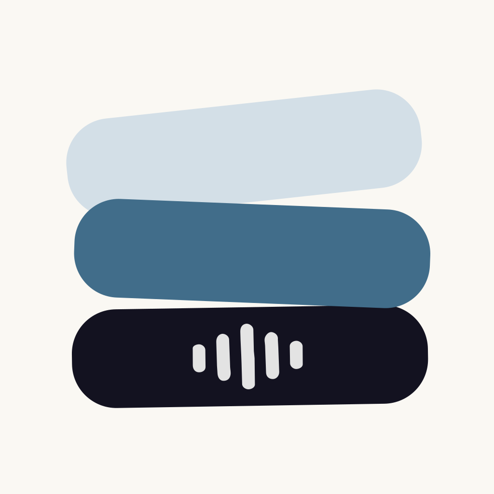

/ macOS App · Product Design · AI
An AI-powered tool for analyzing usability test recordings. It automatically transcribes sessions, identifies patterns in user behavior, and generates structured UX reports with evidence-backed findings — all processed locally on the Mac for privacy.
/ Challenge
Analyzing usability testing sessions is a slow, manual process. Researchers and designers often need to rewatch hours of recordings, take notes by hand, and cross-reference user reactions just to synthesize meaningful insights.
This manual workflow delays decision-making and makes it hard to consistently extract evidence-backed findings, especially under tight product timelines. It also raises a privacy concern: usability recordings are sensitive, and most analysis tools require uploading them to external servers.
The opportunity was to build a tool that automates the tedious parts of usability analysis while keeping all user data private and on-device.
/ Solution
I designed and built Product Sessions, a macOS app that uses on-device AI to transcribe and analyze usability test recordings automatically.
The app breaks each session down task-by-task, flags emotional moments like frustration, hesitation, and satisfaction, and surfaces time-stamped quotes as evidence — turning raw recordings into structured, shareable UX reports in minutes instead of hours.
Because all processing happens locally on the Mac, sensitive user research data never leaves the researcher's device.
/ Key Features
On-device speech recognition transcribes full usability sessions with no manual work required.
AI breaks each session down by task, validating completion and surfacing the key moments.
Automatically flags frustration, hesitation, and satisfaction throughout a recording.
Time-stamped quotes are pulled directly from the recording to support every finding.
Generates structured reports with success metrics and key concerns for stakeholders.
Findings and action items connect directly into existing product workflows.
/ Product Process
Mapped the manual usability-analysis workflow researchers rely on today, identifying where the most time and context get lost.
Defined the core workflow — record, transcribe, analyze, report — and how on-device AI could remove manual steps without compromising privacy.
Designed the report structure and session breakdown views, prototyping in Figma before moving into build.
Built the native macOS app, integrating on-device transcription and AI analysis, and tested accuracy against real usability sessions.
Shipped Product Sessions to the Mac App Store.

Short description of the outcome and impact goes here.